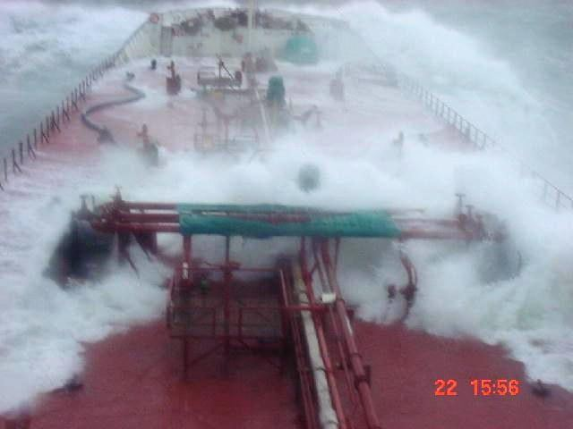
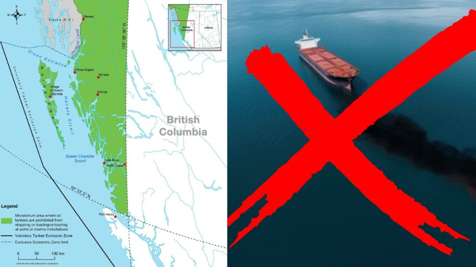

The North Coast tanker ban
Hold the line
Since 2019, federal law has kept crude oil supertankers out of the inside waters of BC's North Coast. In July 2026, Canada and BC pledged to uphold the ban. That's how a line holds — because people keep holding it.
What the ban actually does
It's not a shipping ban. It's a crude-oil firewall.
The Oil Tanker Moratorium Act (2019) stops tankers carrying more than 12,500 tonnes of crude or persistent oils — heavy crude, diluted bitumen — from loading or unloading at North Coast ports, from northern Vancouver Island to the Alaska border.
Everything else keeps moving: ferries, cargo, fishing vessels, container ships, and the fuel deliveries coastal communities rely on. More than 50,000 commercial vessel movements happen on this coast every year. The law targets one thing — the cargo that can't be cleaned up.
Persistent oils earn the name. Weathered diluted bitumen can sink after mixing with sediment, and in real-world conditions responders typically recover less than 20–30 percent of any major spill. On this coast, one analysis found mechanical response would be impossible roughly 30 percent of the year from wave height alone.

The receipts
We've already run this experiment
Exxon Valdez, 1989
~37,000 tonnes of crude into Prince William Sound. Over 2,000 km of shoreline contaminated, hundreds of thousands of seabirds and marine animals killed, more than US$7 billion in damages — and oil still in some sediments 30+ years later.
Nestucca, 1988
A barge collision off Washington put ~875,000 litres of bunker fuel in the water. Winter storms carried the oil north to Vancouver Island's west coast within days, killing thousands of seabirds. Spills don't respect borders.
Nathan E. Stewart, 2016
A tug aground near Bella Bella: ~110,000 litres of diesel — a rounding error next to a supertanker load — closed Heiltsuk clam harvest areas and took weeks to clean. A single laden supertanker can carry several times what the Exxon Valdez spilled.
"BC takes all the risk, while the profits sail somewhere else. A spill wipes out fishing fleets, tourism, and jobs here — and the cleanup bill lands here too." — the coast's economic case, in one sentence
Right now
The line held — this round
Through late 2025 and early 2026, Alberta's government and industry allies pressed Ottawa to repeal or weaken the ban for a North Coast crude terminal — a federal-Alberta pipeline memorandum was signed, coastal leaders note, without consulting BC or Coastal First Nations. First Nations leaders representing hundreds of communities voted unanimously to reject any weakening. The coast was loud.
And it worked. On July 2, 2026, Canada and BC pledged to uphold the North Coast tanker ban in their cooperative agreement. "Today is a good day," said Marilyn Slett, President of Coastal First Nations and Chief of the Heiltsuk Nation — a win that took more than 50 years of First Nations advocacy to build, protecting a region that supports over half of BC's wild Pacific salmon.
But held lines need holding. The op-ed campaign to reopen the ban continues, and major new projects will bring more shipping to the North Coast. An "adjustment" to the tanker ban is still a loophole for supertankers — and BC has already said no.
Make the call
Two minutes on the phone beats a hundred likes
MPs count calls — and a call that says "hold the line, I'm watching" is how upheld bans stay upheld. Use the script as a guide: your own words, your own community, your own reasons.
Sample call: speak your mind
"Hi, my name is ______. I'm calling from ______, about the North Coast tanker ban. I want to state my opposition to supertankers on BC's North Coast.
If we let supertankers full of raw bitumen into the inside waters of Hecate Strait or Dixon Entrance, it's only a matter of time before there's a spill — and a spill would be catastrophic for the coastal economy, marine life, and the people who live here. It would hit salmon, whales, seabirds, shellfish, fisheries, local businesses and jobs. Not to mention a vital food source.
I expect [MP name] to hold the line for BC and oppose any move that might weaken the tanker ban. How you handle this will decide my vote."
If they say modern tankers are safer…
Double hulls don't survive high-energy groundings on a rocky coast — the double-hulled Sanchi burned and sank with all hands in 2018. And in North Coast conditions, crews would be lucky to recover even 10 to 20 percent of the oil.
If they say it's a national economic opportunity…
The profits from a crude terminal flow mostly to foreign investors and out-of-province interests. The risk stays here — on fishing families, tourism operators, and communities whose economy needs clean water. BC's fisheries alone contribute billions annually. One spill erases decades of "opportunity."
If they say tankers already sail near BC…
Alaska-run tankers travel far offshore, west of Haida Gwaii — not through the confined inside waters. And Vancouver-area traffic operates amid dense response infrastructure that simply does not exist on the remote North Coast. A North Coast export terminal would force supertankers through Hecate Strait or Dixon Entrance. That's the whole problem.
Full explainer with all sources: The North Coast Tanker Ban: The Law Protecting BC's Economy.